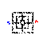
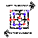
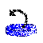

At all times there is a message beneath the game board telling you what is happening. Your opponent announces her move by saying, "My move. I'm thinking..." If the message says "Blue's move" or "Red's move" that means it is your move and you are the stated color.
Your opponent moves by animating her pieces across the board. If you become impatient you may skip the animation and go straight to your move by clicking the board.
There are three stages of play. At each stage you eliminate pieces by making a row of three (called a mill) along a board line. Whenever you make one or two mills you must take an opposing piece by clicking on it. Captured pieces are removed from play but pieces within mills are safe from capture except if all pieces are within mills.
Stage 1 begins with an empty board. On each move you place a piece at a vacant board intersection spot. You can place pieces by dragging them from your pile and dropping them, or you can just click the target spot.
Stage 2 begins when all pieces have been placed. On each move you slide a piece along a board line to an adjacent vacant spot. You can win by surrounding and immobilizing all opposing pieces.
You enter stage 3 when you have only three pieces left. On each move you fly a piece to ANY vacant spot. Your pieces can't be immobilized but you lose if you are reduced to two pieces.
Icons to the left of the board give you added control (even during animation):
 Start a new game.
Undo a move.
Redo a move.
 Swap sides.
 Have your computer move for you.
Click a roman numeral on the left to choose a level of play.
If you win at level VII you are a genius!
Good luck!
Instructions for the Visually Impaired
The Command Form provides accessibility to those who use a keyboard instead of a mouse.
It is designed to be used along with screen reader assistive technology.
When you use the Command Form the game is still presented visually, so your sighted friends can play along.
Before you enter a command you must place your screen reader in Forms Mode by pressing ENTER.
Once you are in Forms Mode you enter 1 to 4 letter commands followed by TAB.
After each command, there may be a delay while your computer plans its move.
Once your computer has a move,
feedback appears as a link from which you return to the Command Form by again pressing TAB.
Do not press ENTER unless you want to exit your screen reader's Forms Mode.
The following commands are available.
Command | Description. |
| N | New Game. |
| U | Undo. |
| R | Redo. |
| S | Swap Sides. |
| C | Have your computer move for you. |
| L | Display the level of difficulty. 1 is the default. |
| 1...7 | Set the level of difficulty. 7 is the hardest. |
| P | Display the last 3 moves. |
| B | Describe the board layout. |
| MOVE ENTRY |
When you enter a move you need to know how to identify board positions. The game board consists of 3 concentric squares with four spoke line segments joining the midpoints of their adjacent sides. Each of the resulting corners and intersections is a board position, making 24 in all. The 3 concentric squares are called X, Y and Z starting with the outer square. Positions on each square are called 1 to 8 starting at the upper left and going clockwise. Here are some examples. The upper left position of the outer square is called X1 and the lower right position of the middle square is called Y5. The left side of the middle square consists of positions Y1, Y8 and Y7. And the left spoke consists of positions X8, Y8 and Z8. To enter a placing or taking move, just enter its position. For example to place a piece on Y4 enter Y4. To enter a sliding or flying move enter both positions. For example to slide a piece from X2 to Y2 enter X2Y2. |
Merrelles should work with any screen reader compatible browser. In addition, the Java Plug In must be installed and enabled in your browser in order to play. Merrelles has been tested successfully with both Internet Explorer 6 and Firefox 2 and both JAWS 8 and Window-Eyes 6.
If you do not own a Nine Men's Morris board for the blind, you can make one easily.
First find some thick cardboard and cut out 2, 4, 6, and 8 inch squares.
Glue each square to the center of the next, keeping corners aligned.
The bottom 3 steps of the resulting pyramid delineate your 3 concentric playing squares X, Y and Z.
You may mark each playing position by sticking thumbtacks into steps X, Y and Z at their corners and midpoints.
Next, to make your playing pieces, find a discarded rubber mouse pad and cut out
9 circles and 9 squares 1 inch across.
Now you are ready to play!
Access the Command Form
Links
Software Documentation
Game History
Wiki
| Paul Emory Sullivan | Merrelles Applet and Game42 Engine. |
| Claire Debika Sullivan | Papyrus Drawings and Artistic Design. |
| Zoltan Gothard | Game Tuning and UI Advice. |
| Ahdy Atalla | Game Tuning Advice. |
| James P Buzbee | Hershey Font Class. |
| Doctor A V Hershey | Hershey Font. |
| James Hurt | Hershey Gothic Italian Font. |
| Nasa | Hubble Telescope Pictures. |
Send your feedback to Paul Emory Sullivan